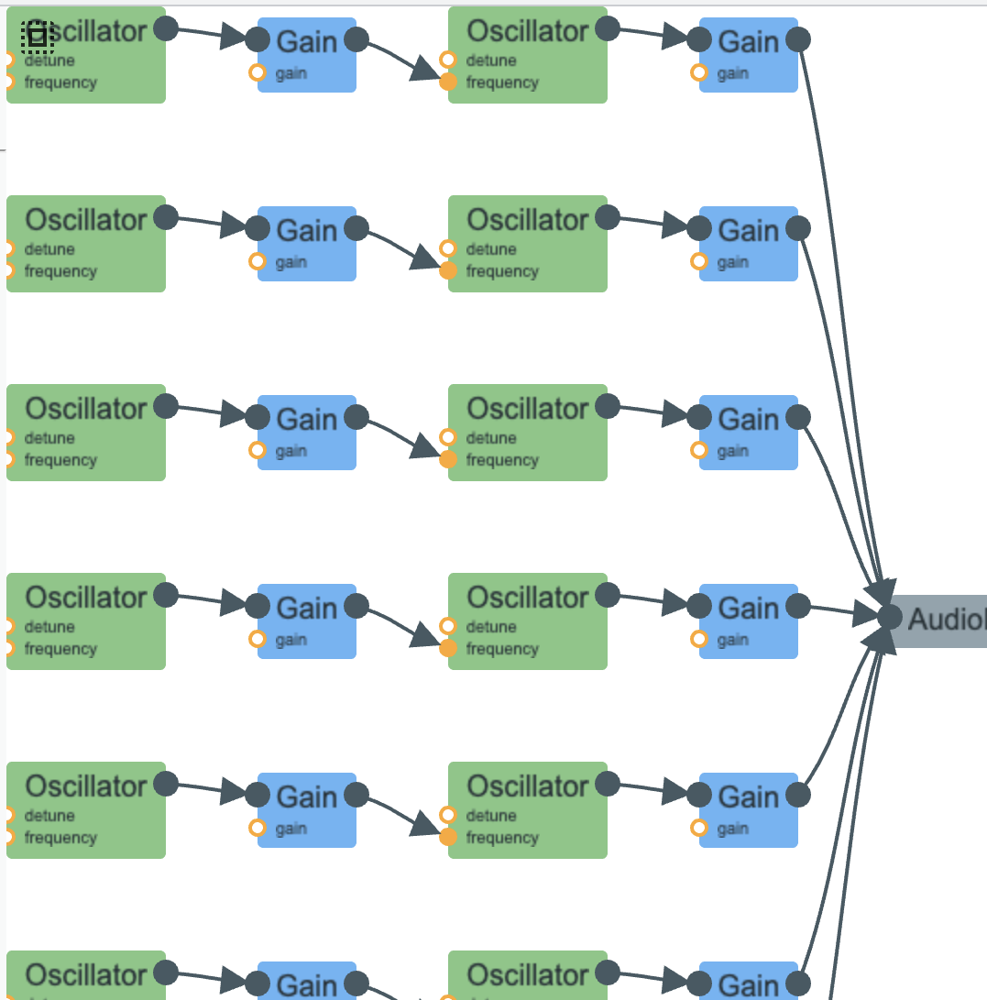

This code simulates the sound of a bouncing ball using FM synthesis and a decreasing bounce event pattern. This is in line with the principles from "Practical 7: Bouncing" in Designing Sound.
Files
bouncing.html– HTML page with a button to start the bouncing sound.bouncing.js– JavaScript implementation using the Web Audio API to generate impact sounds, applying amplitude decay and schedules bounces at progressively shorter intervals.
How it works
Each bounce is represented as an FM-synthesized impact sound where the carrier oscillator runs at 120 Hz. The modulator sweeps from around 210 Hz down to 80 Hz, so that the bounce's sound dwindles as the bouncing continues. The amplitude, decay time, and bounce period decrease over the course of the simulation, resulting in a sequence of impacts that become quieter, shorter, and closer together similar to the real ball bouncing.
How to run it
- Open
bouncing.htmlin a web browser - Click the "Play Bouncing Sound" button
Audio Signal Flow Graph

Process and Experience
I started from the bouncing-ball model in Designing Sound, which mentioned a sequence of impacts whose energy drops over time, with event spacing shrinking as the ball loses height. I wanted to recreate this pattern with discrete bounces with each bounce getting quieter and quieter, reflecting the change in energy. The button click triggers the sequence of events.
Types of Synthesis Used
1. FM synthesis
This is the main synthesis method in the code where there's a carrier oscillator at 120 Hz and a modulator oscillator that decreases ~210 Hz down to 80 Hz. The modulator controls the carrier frequency through a gain node
I used FM synthesis because it provides a spectrum that changes with each bounce, effectively mimicking the cascade of loud to quiet sound in a real bouncing ball. The first few bounces are stronger. It smoothly moves from a louder tone to a simpler quiet thud.
2. Amplitude envelope
I used an amplitude envelope so that each bounce has a short amplitude envelope that starts on the full amplitude, then decays quickly after each bounce. This mimics the real world bouncing ball sound.
How the Parts Fit Together
The code has two main layers:
1. Bounce event pattern
This helps schedule the ball bouncing pattern. The first bounce happens immediately with each bounce scheduling the next one using setTimeout. Each bounce impact period is directly linear to the current height where as height falls, periods get shorter.
2. Impact sound generation
This is the sound generator where for each scheduled bounce it creates a carrier oscillator and a modulator oscillator, sweep modulator frequency downward over the impact, apply an amplitude decay envelope, and finally it connect the result to the audio output.
Why These Choices
FM synthesis over noise-based filtering
I chose FM because the bouncing-ball example specifically describes: a spectrum that varies between sine-like and more harmonic, modulation amount linked to impact energy, and the need for a tonal "thud" plus nonlinear attack content.
Decreasing period and decay
The key cue of a bouncing ball is that the intervals shrink and the impact energy drops. I used a height-based value to compute period, amplitude, decay, and modulation strength.